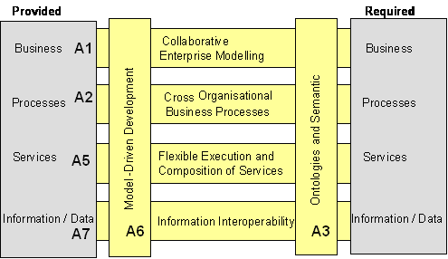

")

Requirements - solution mapping
Introduction
The objective of the “Requirements – Solution mapping is to find correspondences between solutions and requirements in order to compare expectations and requested solutions. In order to do this, similar conditions are necessary according to the interoperability context coming from different sources like role of organisation, business process type etc. For sure an 1:1 mapping is due to the fact of diversity on both sides not possible. Based on more than 600 ATHENA requirements, the mapping can be done by linking business needs and solutions. In this context requirements play the role for deeper specification of the industrial or scientific problem in order to support implementation. The approach is to map Business Needs (which are 1:1 correspondent to the interoperability issues) to solutions by using common context elements. This means if a business need has a similar context to a given generic interoperability solution, specific solutions can be selected in order being implemented by specific (ATHENA) solutions. Generic solutions can be seen as interoperability functions which can be combined for solving a more or less complex interoperability problem (challenge) as stated in business needs.
The common context plays the glue between both generic solutions and business needs. By having introduced this middle layer specific solutions and specific requirements can be related as well.

Annotation of business needs and solution
The contextualisation consist on eight elements
- AIF – Railroad levels: Framework which relates the ATHENA Solutions to interoperability levels: business, process, service, data see D.A4.2
- AREA of Concern: regarding to the EIMM levels (see chapter before)
- Business Process Relation: With this element we define whether a business need is specific to the business case under study (Product Portfolio Management, e-Procurement etc) or not.
- Collaboration Type: This element gives an idea in which organisational relations business partners are – from simple buyer and seller to virtual enterprises.
- Interoperability life cycle step as proposed by A4 (sub groups of run and design time) and the issues between the steps
- Design Time: Analysis, Negotiation
- Run Time: Realisation and Operation
- MDA artifact: Here the MDA levels from Computational Independent Model (CIM) down to Platform independent model (PIM), Platform Specific Model (PSM) and Source Code are considered.
- Quality Condition: This element is used for identifying whether the business need or a solutions addresses:
- Quality Improvement
- Time reduction
- Cost reduction
- Increase Flexibility
- User Perspective: is important to identify the main stakeholder of an interoperability requester and the related solution. Here the 10 types of Roles are selected which are identified by the B6 project:
- Business related Role
- Business Manager
- Business Process Analyst
- IT Manager
- IT System related Role
- System Architect
- System Designer
- System Responsible
- Developer
- IT Application oriented Role
- Unit Manager
- Performance Engineer
- Software User
- Business related Role
The Generic Solutions that were identified are clustered into four groups derived from the AIF framework and the requested solutions by B5:
- Model related Solutions
- Create Model – to enable model elaboration
- Execute Model (transform data) – solution to use a model for (automatic) data transformation
- Transform Model horizontally between different application on the same AIF railroad level (on all levels: Business to Business: Process to Process: Services to Service : Data to Data).
- Transform Model vertically between the different AIF railroad levels (from business to data or vice versa)
- Enrich models by additional information in order to improve capabilities
- Create compatible views of models in order to allow comparison between different systems which are reflected by the models
- Mapping of data in models to link data to models
- SW Component related solution
- Searching (e.g. for a software service)
- Selecting (e.g. by using profiles or conditions and criteria’s as well in a runtime environment)
- Invocation – into existing systems (e.g. in a runtime environment)
- Analysis and Testing
- Assessment of the state of the art of a given system as well against a to be profile
- Conformance test – in runtime against a given specification
- Logic test – as well conceptually
- Performance test – by using given parameters
- Search for content – based on given parameters
- Connectivity
- Naming - semantic
- Provide Connection - physically
- Routing (messages and models) - logically
As it has been already mentioned, the generic solutions can be seen as interoperability functions which can be combined into a holistic scenario. This means that a given “Business Need” can require several interoperability functions. For example the business need “Derive from process structure of a PLM application the business logic and compare this with other PLM application and their procedural structure” requires two different interoperability functions as can be seen in the figure below.

In order to support the analysis of a “Business Need” the ATHENA railroad has to be used as the major pattern. For the Business Need example we could indicate the source level of a given model (internal process structure), the derived target model (business model) and the transformation on “Business Level” because a comparison with an other application is required.

Mapping application by using the Protégé toolset
The contextualization of business needs and generic solutions is done by using the Protégé toolset [Stanford Medical Informatics]. Protégé was used to federate information coming from the different data repositories developed by ATHENA within a single knowledge base, called the harmonization model, which contents the different classification used within the ATHENA project. The goal was to enable mapping formalisation between specific requirements, generic requirements, generic solutions and specific solutions. In addition, advanced querying and visualization tools allowed easily analysing this mapping without any development. See [Figay] for more information about the knowledge base and how to perform queries.
In the figure below the contextualization of a business need in Protégé can be seen. The context elements are modelled as classes. Instances of the classes are the possible values. E.g. “Context Element AIF_Level” is a subclass of “ATHENA_Context Element”, CIM is an instance of this Class and can be used for annotating a given Business Need (here “Efficient development of a standard model”). The annotation is possible because each “Business Need” and each “Generic Solution” has the Class: “Contextualized Element” as additional Parent Class as can be seen as “Asserted Types”.
The same contextualization is done with the generic solutions as well with the related specific solutions coming from the ATHENA research and development activities but only regarding the MDA and AIF Levels. On both items an annotation is possible from Generic and Specific Solutions because, a differentiation is in some cases not applicable.
Analysis
Protégé is now used for mapping “Business Needs” and the “ATHENA Specific Solutions” based on the Generic Solutions and specifically related to the context elements as figured out in the figure below. Protégé provide two alternatives for analysis:
- Graphical analysis based on the Jambalaya plugin
- Queries for filtering and combining context elements and groups of solutions and “Business Needs”
The graphical analysis gives a very short overview about gaps between “Business Needs” related to the pilots and the required solutions coming from ATHENA.
By applying filtering, the relevant major items for mapping can be highlighted. These are: Generic Solutions as glue for combining “Business Needs” and “Simple Solutions” as well for detailed analysis the link to the “Context Elements and “Composed Solutions”. By expanding the container the relationships between the items can be identified and analysed.
Of course the first view seems to be very complex, but by zooming and filtering gaps and related issues can be pointed out very fast. So for instance clusters of a proliferation of solutions can be identified as well not used solution parts like the “Generic Solution”: “Search for SW Component” is neither implemented as a “Simple Solution” nor requested by a “Business Need”.
The Protégé 3.2 OWL plug-in includes a SPARQL query panel that allows performing SPARQL queries. SPARQL is a query language for getting information from RDF graphs. It provides facilities to:
- Extract information in the form of URIs, blank nodes, plain and typed literals.
- Extract RDF subgraphs.
- Construct new RDF graphs based on information in the queried graphs.
SPARQL can be used with OWL. OWL is an extension of RDF (Resource Description Framework). SPARQL is a language and set of APIs specified by W3C, and that can be consulted at http://www.w3.org/TR/rdf-sparql-query/ and is using as well RDFS (RDF-Schema).
One example is to display matching Business needs to generic solutions through the Context Element “Area of concern” The idea here is to obtain list of business needs related to generic solution through a same area of concern. We also expect to obtain the name property of needs and generic solutions.
WHERE {
?y :Name ?genericSolution.
?x :Name ?businessNeed.
?z :Name ?areaOfConcern.
?y :AreaOfConcern_Context ?z.
?x :AreaOfConcern_Context ?z.
?x rdf:type :ATHENA_BusinessNeed .
?y rdf:type :Generic_solution .
}